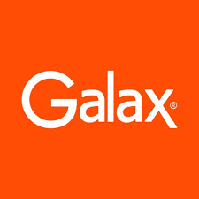
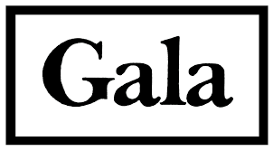

Galax Frelancer es un estudio creativo multidisciplinario. Trabajamos juntos para diseñar, crear y producir obras de las que estamos orgullosos. Estamos disponibles para contrataciones en un amplio rango de disciplinas creativas y para múltiples trabajos, proyectos y eventos
Si quieres que tus visitantes se sientan encantados con tu negocio, preséntate como lo hizo GALAX FREELANCER. La agencia de publicidad ofrece experiencias inigualables para sus clientes y su forma de presentarlas en su sitio web lo comprueba. Si dominas los formatos tan bien como ellos, puedes lograr que el medio se convierta en el mensaje.
Algunas personas creen que para hacer crecer una empresa se debe ser despiadado, pero sabemos que hay una mejor alternativa; un método en el que el resultado final también es bueno para los clientes. Creemos que los negocios pueden crecer con conciencia, alcanzar el éxito con ética y que esto se puede lograr con el método inbound. Por eso, creamos una plataforma que combina el software, la educación y el sentido comunitario para ayudar a las empresas a crecer mejor todos los días. Nuestra misión es: «Ayudamos a millones de empresas a crecer».
La visión de Galax Freelancer se puede resumir en los siguientes aspectos: 1. Trabajamos para el cliente 2. Trabajamos para ser muy transparentes 3. Favorecemos la autonomía y la responsabilidad 4. Creemos que nuestra mejor ventaja son los compañeros increíbles 5. Nos inclinamos por el impacto a largo plazo
modelo H.E.A.R.T. (Humble, Empathetic, Adaptable, Remarkable, Transparent, por sus siglas en inglés), es un sistema que alienta a los colaboradores de HubSpot a tomar decisiones basadas en estos valores para crear lazos valiosos, así como un impacto positivo, tanto con la comunidad interna como con sus clientes. Ha sido un eje importante para el crecimiento de la compañía, tal y como señala su más reciente reporte de diversidad, inclusión y pertenencia.
